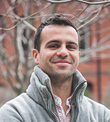

News Archives : 2014 : Seven MCB Post-doctoral Researchers Awarded Post-doctoral Fellowships
by Cathryn Delude
June 13, 2014
The MCB department is pleased to announce the fellowships awarded to seven post-doctoral researchers. Maddalena Delma Caiati (Hensch Lab), Miguel Costa Coelho (Murray Lab), Ying Li (Dulac Lab), and Martin White (Kleckner Lab) have each received a three-year Long-Term Fellowships (LTF) from the Human Frontier Science Program (HFSP). Ye-Jin Eun (Garner Lab) received a three-year Helen Hay Whitney Fellowship. Alexander Mathis (Murthy Lab) received a three-year Marie Curie International Outgoing Fellowship. Timothy Peterson (O’Shea Lab) received a five-year NIH Pathway to Independence Award (NIH K99).
About the Research
Maddalena Delma Caiati
Hensch Lab
Human Frontier Science Program Long-Term Fellowships (LTF)
Project: Functional and anatomical map of developmental trajectories in the BDNFVal66Met polymorphism.
Human skills reflect the neuronal circuits shaped by early life experience, during critical periods (CPs) of development characterized by enhanced brain plasticity. Alterations in the timing of CPs may be mirrored by abnormal circuitry formation and underlie neuropsychiatric disorders. The BDNF Val66Met polymorphism, very common in humans, constitutes a susceptibility factor for several neuropsychiatric conditions. My aim is to investigate if this single-nucleotide polymorphism differentially impacts the functional and anatomical map of developmental trajectories across different cortical modalities.

Miguel Costa Coelho
Murray lab
Human Frontier Science Program Long-Term fellowship (LTF)
Project: Experimental evolution of genetic instability during a yeast model of cancer.
Life depends on the faithful transmission of genetic information. During cancer progression, the selection for successive mutations favors the evolution of genetic instability. However, how genetic instability arises remains an unsolved question. Instead of testing a catalog of mutants, I propose to evolve genetic instability in Saccharomyces cerevisiae (a species of yeast) by placing cells under selective pressure to, as in tumor suppression, inactivate growth suppression and identify genes that mutate early to cause instability. This model will allow us to later understand genetic instability during cancer in humans.
Ye-Jin Eun
Garner lab
Helen Hay Whitney Fellowship
Project: Building a mechanistic model for regulation of cell wall growth rate in bacteria.
The bacterial cell wall (peptidoglycan) is a stiff polymer network encapsulating the membrane-bound cytoplasm. Although peptidoglycan synthesis is a major target of antimicrobials, we understand very little about how the growth rate of the cell wall changes in response to the metabolic status of the cell. My research aims to develop a mechanistic model for the metabolic regulation of cell wall growth and reveal potential targets for antibiotic development.
Ying Li
Dulac Lab
Human Frontier Science Program Long Term Fellowship
Project: Neural representation of social interactions in awake behaving mice
The mechanisms underlying the representation of sensory cues and the generation of specific behavioral outcomes are basic questions in system neuroscience. In rodents, the vomeronasal pathway, stimulated by nonvolatile pheromones, is considered to be an essential mediator of innate social behaviors. Using microendoscopy based calcium imaging, my project aims to examine the signal processing in the downstream brain centers, responding to either natural pheromones cues or activation of individual vomeronasal receptor populations. I hope to uncover basic principles underlying both sensorimotor transformation and social behavior generation at circuit level.
Alexander Mathis
Murthy lab
Marie Curie International Outgoing Fellowship
Project: The Algorithmic and Neuronal Basis of Active Sensing in the Case of Odor-Trail Tracking
Rodents are capable of following odor-trails. This behavior is of great importance to rodents as it helps localizing food and mates, as well as avoiding predators. Only during an inhalation can a rodent smell, and thus by deciding where to sniff the animal actively decides where to 'look for the odor-trail'. Odor-trail tracking rodents sniff up to 10 times per second while swinging their snout back and forth over the trail. Surprisingly, rodents seem to sniff only a few times between the turning points. Are these sniff locations efficiently picked and what is the underlying neuronal representations for this behavior? I am going to quantitatively study this behavior in rodents with the goal to characterize it algorithmically. Furthermore, I will also investigate how odor-trails are represented by the neuronal activity of the early olfactory system.
Timothy Peterson
O’Shea Lab
NIH Pathway to Independence Award (NIH K99/R00)
Project: TBONE and Phosphonates in Mineralization During Aging
Phosphonates are naturally abundant in our food and some, such as the bisphosphonate Fosamax®, are among the most commonly used medications in aging populations. The proposed research will investigate a newly discovered gene, TBONE (Target of BisphOsphonate NitrogEnous) that is critical for the therapeutic effects of phosphonates. This work suggests an entirely new understanding of important medicines and also a
new therapeutic approach in aging—one that is dietary, and likely considerably safer than that of taking bisphosphonates.
Martin White
Kleckner Lab
Human Frontier Science Program Long Term Fellowship
Project:
In order to reproduce sexually, diploid cells must undergo a specialized form of cell division (meiosis) to generate haploid gametes (e.g. egg and sperm). During meiosis, there is reciprocal exchange of DNA between homologous chromosomes, which occurs in a process known as crossover formation. Crossovers are necessary to create genetic diversity and prevent the mis-segregation of chromosomes, with defects affecting fertility. Although it is clear that the numbers and physical distribution of crossovers are tightly regulated, the mechanism(s) underlying this regulation are poorly understood. I aim to provide new insights into this process. \
About the Fellowships
Human Frontier Science Program (HFSP) Long-Term Fellowship
Helen Hay Whitney Foundation
Marie Curie International Outgoing Fellowship